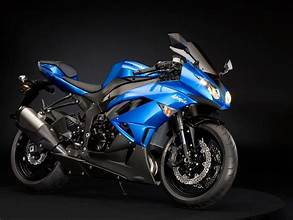

თავდაპირველად, „კავასაკი ეარქაფით“ მოტოციკლებს „მეგუროს“ სახელით აწარმოებდა, მას შემდეგ, რაც შეიძინა მოტოციკლების მწარმოებელი კომპანია „მეგურო მანუფაქტურგი“, რომელთანაც პარტნიორობა ჰქონდათ. საბოლოოდ, კომპანია „კავასაკი მოტორ სეილს“ დაემსგავსა. [ 3 ] ზოგიერთ ადრეულ მოტოციკლს საწვავის ავზზე „კავასაკი ეარქაფით“ გამოსახული ემბლემა აქვს.